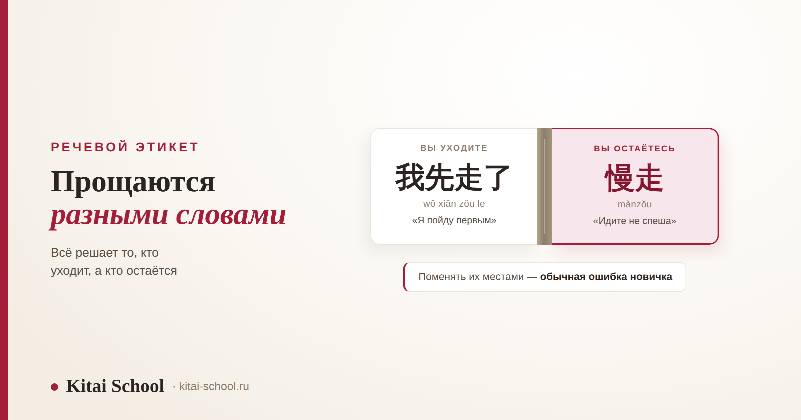
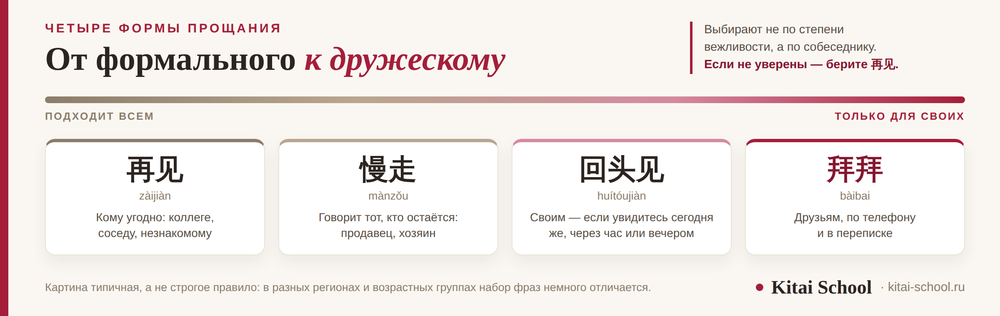

Речевой этикет
Как попрощаться на китайском: от формального 再见 до дружеского 拜拜


В учебнике прощание одно — 再见. В жизни их несколько, и выбирают их не по вежливости вообще, а по собеседнику. С начальником, с другом и с продавцом прощаются разными словами. Разберём четыре основные формы, посмотрим, что говорить в каждой из трёх ситуаций, и добавим три фразы, которых обычно нет в списках. Чтение 再见 по слогам и разбор пары 慢走 — 留步 у нас есть отдельно, здесь дадим их коротко и со ссылками.
再见 подходит всем и всегда — с него можно начинать. 拜拜 — дружеское, для своих, для телефона и переписки. 回头见 говорят, если увидитесь сегодня же. 慢走 говорит не уходящий, а тот, кто остаётся, — продавец, хозяин дома, официант. А начальнику лучше сказать 我先走了: так видно, что уходите вы сами.
Четыре формы: от формальной к дружеской
Все четыре значат примерно «до свидания». Разница в том, кому их говорят.
| Фраза | Чтение | Оттенок и кому |
|---|---|---|
| 再见 | zàijiàn | нейтральное. Подходит всем: преподавателю, коллеге, соседу, незнакомому человеку |
| 慢走 | mànzǒu | вежливое, но его говорит тот, кто остаётся: продавец, хозяин дома, официант |
| 回头见 | huítóujiàn | для своих, если увидитесь сегодня же — через час, после обеда, вечером |
| 拜拜 | bàibai | дружеское, из английского bye-bye. С друзьями, по телефону, в переписке |
Порядок в таблице не случайный. Сверху то, что подходит в любой обстановке, снизу — то, что годится только для своих. Если не уверены, кому что сказать, берите 再见: с ним нельзя промахнуться ни в одну сторону. Оно не звучит ни слишком сухо, ни слишком запросто.
Отдельно про 拜拜. Это не сленг и не подростковое слово: так говорят и взрослые, и дети. Просто не в официальной обстановке. И читается оно ближе к «бáй-бáй», с подражанием английскому, — а не по словарной записи буква в букву. Как ставятся звуки и тоны вообще, разобрано в статье про корректировку произношения.
Про 回头见 тоже есть деталь, которую редко объясняют. Эта фраза значит не «когда-нибудь увидимся», а «увидимся сегодня же». Вы выходите на обед и вернётесь через час; расходитесь по делам, а вечером встретитесь снова. Если вы прощаетесь до завтра, 回头见 прозвучит странно — для этого есть 明天见. А если вы не знаете, когда увидитесь, берите обычное 再见: оно ничего не обещает и ни к чему не обязывает.
Схема с 见 продолжается дальше сама: поставьте перед ним время — и получится новое прощание. 明天见 (míngtiān jiàn) — «до завтра», 下次见 (xiàcì jiàn) — «до следующего раза», 周一见 (zhōu yī jiàn) — «до понедельника». Названия дней недели для таких фраз собраны в разборе дни недели в Китае. Это удобно: одну схему выучили — и получили десяток прощаний вместо одного.
И ещё одно наблюдение, которое экономит нервы новичкам. Прощание в китайском часто короче, чем ждут. Длинных формул вроде «был рад вас видеть, до скорой встречи» в обычном разговоре почти нет: говорят одно слово и расходятся. Если вам ответили коротким 拜拜 и сразу отвернулись, это не холодность, а норма.

С начальником, с другом и с продавцом
Одно и то же «до свидания» в этих трёх случаях звучит по-разному. Разберём по порядку.
С начальником и со старшими. Здесь важно показать, что уходите вы, а не вас отпускают. Поэтому вместо простого 再见 говорят 我先走了 (wǒ xiān zǒu le) — «я пойду первым». Если встреча продолжается без вас, подойдёт 失陪了 (shīpéi le) — «простите, что оставляю вас». А если вы сами провожаете старшего, скажите 您慢走 (nín mànzǒu): 您 — вежливое «вы».
С другом. Тут всё проще: 拜拜 или 回头见, если встретитесь ещё сегодня. С друзьями прощание часто вообще короткое — одно слово и всё. Долгие формулы между своими звучат странно, примерно как если бы вы сказали приятелю «позвольте откланяться».
С продавцом. Скорее всего, первым заговорит он — и скажет 慢走. Это не «до свидания», а пожелание того, кто остаётся: «идите не спеша». Отвечать тем же словом не нужно, ведь продавец никуда не идёт. Достаточно 好的，谢谢 (hǎo de, xièxie) — «хорошо, спасибо». Эту пару реплик и ответ 留步 мы подробно разобрали в статье про шесть способов попрощаться.
Студент второго года проходил практику в китайской компании. Прощаться он привык коротко и по-дружески: в конце дня махал рукой и говорил всем 拜拜, включая руководителя отдела.
Никто его не поправил. Но через пару недель коллега сказал между делом: «Ты с ним как с однокурсником». Без упрёка, просто наблюдение.
Мы поменяли одну фразу: вместо 拜拜 он стал говорить 我先走了. Через неделю он написал, что руководитель впервые в ответ кивнул и сказал 好的，路上小心. Ничего больше не менялось — ни работа, ни язык. Изменилось только то, с кем он говорит какими словами.
| Кому | Что говорите вы | Что услышите в ответ |
|---|---|---|
| Начальнику, старшему | 我先走了 / 失陪了 | 好的，再见 или 慢走 |
| Другу, однокурснику | 拜拜 / 回头见 | то же самое в ответ |
| Продавцу, официанту | 谢谢，再见 | 慢走 — отвечать тем же не нужно |
Обратите внимание на правую колонку. В двух случаях из трёх прощание просто повторяют за собеседником, и это нормально. Не повторяют только 慢走: его говорит тот, кто остаётся. То же самое правило работает и при встрече — про него мы писали в статье о том, что отвечать на «нихао».
Три фразы, которых обычно нет в списках
Эти три пригодятся почти сразу, но в учебных списках прощаний они попадаются редко.
| Фраза | Чтение | Когда говорят |
|---|---|---|
| 保重 | bǎozhòng | «берегите себя». Прощание надолго: перед отъездом или тому, кто болеет |
| 先这样吧 | xiān zhèyàng ba | «давай пока на этом». Так заканчивают переписку и телефонный разговор |
| 改天聊 | gǎitiān liáo | «поговорим на днях». Если разговор откладывается, а не заканчивается |
Про 保重 стоит сказать точнее. Это не «пока» и не «до завтра». Оно звучит серьёзнее и годится там, где расстаются надолго. Если сказать 保重 приятелю, с которым увидитесь завтра, он это заметит — примерно как русское «береги себя» в ответ на «ну, я побежал».
Про переписку отдельно. Разговор в мессенджере обычно не обрывают, а закрывают одной фразой. Сначала 先这样吧, потом 拜拜 — или 晚安 (wǎn'ān), «спокойной ночи», если дело к ночи. По телефону тоже чаще говорят 拜拜: 再见 в трубке звучит слишком церемонно. Что ещё принято писать в китайских чатах, собрано в разборе китайский интернет-сленг.
Что мы здесь не пересказываем
Про прощание у нас есть ещё две статьи, и они отвечают на другие вопросы. Короткий маршрут.
| Вопрос | Где разобрано |
|---|---|
| Как 再见 читается по слогам и почему не «цзайцзянь» | как на самом деле читается 再见 |
| Пара 慢走 — 留步 целиком, кто кому что говорит | шесть способов попрощаться |
| Фразы, которые легко сказать не к месту | шесть способов попрощаться |
| Как здороваются и что отвечать на приветствие | что отвечать на «нихао» |
| Вежливость к старшим и «лицо» | китайский этикет общения |
| Прощание на деловой встрече | бизнес-этикет в Китае и китайский язык для делового общения |
И главное, ради чего всё это разбиралось. Прощание в китайском — не одно слово, а выбор из нескольких. Выбирают не по тому, насколько вежливым хочется выглядеть, а по тому, кто перед вами и кто из вас уходит. Выучить четыре формы — работа на один вечер. Привыкнуть говорить разные слова разным людям — дело практики, и быстрее всего это выходит в разговоре. Как устроены такие занятия, мы описали в курсе по разговорной речи.
Частые вопросы (FAQ)
Как попрощаться на китайском?
Самое надёжное — 再见 (zàijiàn). Оно нейтральное и подходит почти всем: преподавателю, соседу, коллеге, незнакомому человеку. Но живых форм больше, и выбирают их по собеседнику. С другом говорят 拜拜 (bàibai). Тому, с кем увидитесь сегодня же, — 回头见 (huítóujiàn). А 慢走 (mànzǒu) говорит не уходящий, а тот, кто остаётся.
Чем 拜拜 отличается от 再见?
Оттенком, а не смыслом. 再见 подходит в любой обстановке, в том числе в официальной. 拜拜 пришло из английского bye-bye и звучит по-дружески: так прощаются со знакомыми, по телефону и в переписке. Начальнику или человеку заметно старше 拜拜 обычно не говорят — не потому, что это грубо, а потому, что звучит слишком запросто.
Что говорят при прощании в магазине?
Продавец скажет вам 慢走 (mànzǒu) — дословно «идите не спеша». Это не «до свидания», а пожелание того, кто остаётся, тому, кто уходит. Отвечать тем же словом не нужно: достаточно 好的，谢谢 (hǎo de, xièxie) — «хорошо, спасибо». Подробно эту пару реплик мы разобрали в отдельной статье.
Как попрощаться с начальником по-китайски?
Лучше всего показать, что уходите вы, а не он вас отпускает: 我先走了 (wǒ xiān zǒu le) — «я пойду первым». Если уходите с встречи, которая продолжается, подойдёт 失陪了 (shīpéi le). А если провожаете старшего сами — 您慢走 (nín mànzǒu). Про вежливость к старшим у нас есть отдельный разбор.
Как закончить переписку или звонок по-китайски?
В переписке часто пишут 先这样吧 (xiān zhèyàng ba) — «давай пока на этом», а потом 拜拜 или 晚安 (wǎn'ān), если дело к ночи. По телефону прощаются тем же 拜拜: оно звучит естественнее, чем 再见, которое в трубке кажется слишком церемонным. А если разговор откладывается — 改天聊 (gǎitiān liáo), «поговорим на днях».
Что значит 保重?
保重 (bǎozhòng) — «берегите себя». Это прощание не на сегодня, а на долгий срок: его говорят перед отъездом, при расставании надолго или человеку, который болеет. В обычном «пока, до завтра» оно прозвучит слишком весомо, и собеседник заметит несоответствие.
Хотите проверить, как у вас звучат эти фразы вслух? На диагностическом занятии послушаем произношение и разберём, что говорить в ваших обычных ситуациях. Оставить заявку или написать в Telegram.
Дальше по теме: шесть способов попрощаться — «До свидания» по-китайски: 再见 и ещё пять способов попрощаться; чтение 再见 по слогам — как на самом деле читается 再见; приветствие — что отвечать на «нихао»; вежливость к старшим — китайский этикет общения; переговоры — бизнес-этикет в Китае; деловые фразы — китайский язык для делового общения; фразы в поездке — китайский язык для путешествий; дни недели — дни недели в Китае; чаты и сленг — китайский интернет-сленг; произношение — корректировка произношения; устная речь — курс по разговорной речи; с чего начать — изучение китайского языка с нуля; программа для взрослых — курсы китайского для взрослых.
Источники
- Практика Kitai School — разбор речевого этикета на занятиях со взрослыми и с теми, кто работает или учится в Китае.
- Наблюдения за тем, какие прощания звучат в магазинах, офисах и студенческих общежитиях, и чем они отличаются от учебных списков.
- Типичная картина, а не строгое правило: в разных регионах и возрастных группах набор фраз немного отличается.
Пусть учится легко! 后会有期！